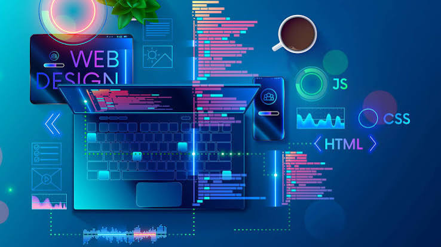
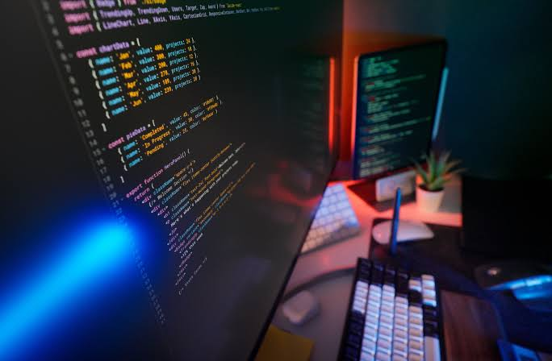
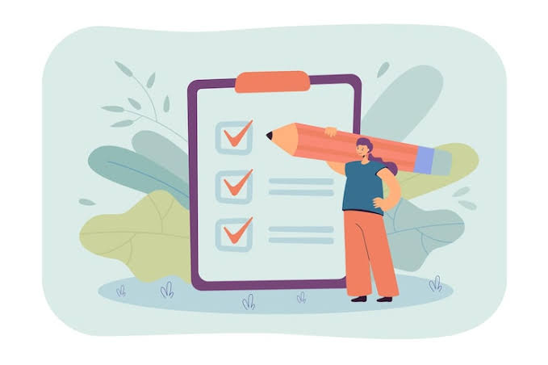

Portfolio Website
A responsive portfolio website developed using HTML and CSS.
This page contains some of my current and future academic and personal projects.
A responsive portfolio website developed using HTML and CSS.

A web design project demonstrating layout, navigation and responsive design.

A programming project developed during my Computer Science studies.

This section will be updated with future projects completed during my studies.